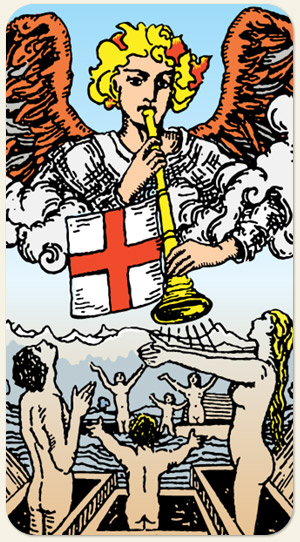

É um chamado, um convite, um alerta, algo impossível de ignorar. O despertar, uma nova chance ou a última chance, a ajuda que chega, a resposta, a visão do sobrenatural, o arrebatamento, o trabalho mediúnico.
É a pessoa que só vê a boca da trombeta e não consegue ver o todo, o mesmo pode se aplicar aos Ases. Pode indicar retorno, grandes revelações, não querer ouvir os sinais ou até mesmo algo que está sendo dito de forma clara. Relações cármicas, relações de vidas passadas, procurar ajuda, pessoas religiosas, pessoas que falam alto.
Positivo: Chamado, despertar, ver os sinais da vida e do universo, inspiração, socorro espiritual, ancestrais salvos, se permitir ser ajudado, contar boas notícias.
Negativo: Um chamado que não foi atendido, almas vagando, falsas verdades que transformam pessoas em zumbis, falsos profetas, necessidade de buscar auxílio espiritual, falar e não ser ouvido, falta de despertar, acomodação, procrastinar uma missão.
Amor e Sexo: Relações barulhentas, públicas, o casal que precisa ser reanimado, o despertar da sexualidade, seja pela primeira vez ou não, alcançar o orgasmo, vazar nudes.
Trabalho e Dinheiro: Resgate, socorro, atividades terapêuticas, médicos, morte, fascínio, admiração, manipulação, comunicação, propaganda, ser convocado, ser escolhido, publicações, divulgações, oportunidades únicas. Dinheiro é um assunto que não é fã de Julgamento: heranças, pensões, dinheiro de fonte inesperada, receber ajuda, coisas de última hora.
Espiritualidade: Ser protegido, guiado, espíritos socorristas, energias angelicais. Forças do carma, arquitetos do destino, seres elevados, a voz de Deus, o mentor espiritual, linha das almas, pregadores, querer voltar para contar as boas experiências e dividir coisas boas com os demais, compartilhar.
Símbolos: Anjo, Nuvens, Trombeta, Cruz Solar, Montanhas Nevadas, Árvores, Mar, Casal, Criança, Túmulo.
Cores: Azul, Vermelho, Amarelo, Branco, cinza.
Elementos: Espírito e Espírito.
Referência: Matrix (filme), na cena em que Neo acorda e vê a plantação humana. A corneta do Show das Poderosas.